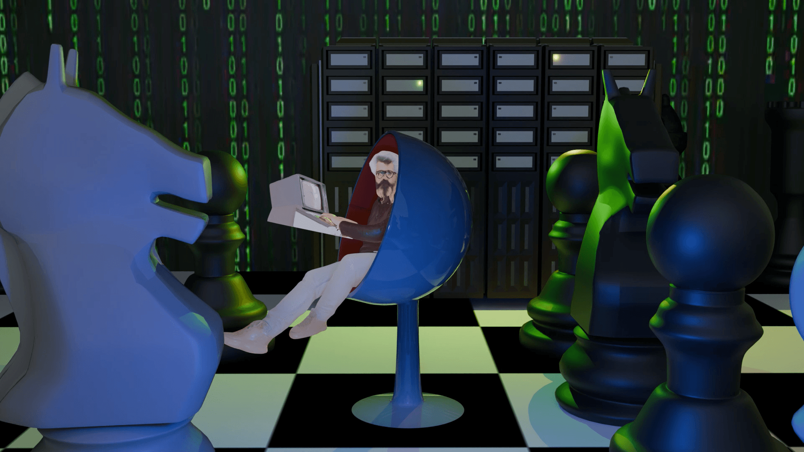
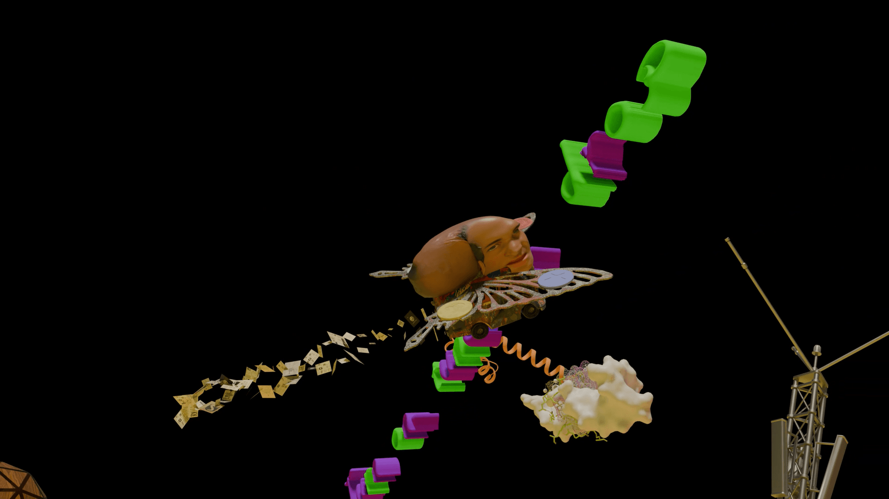
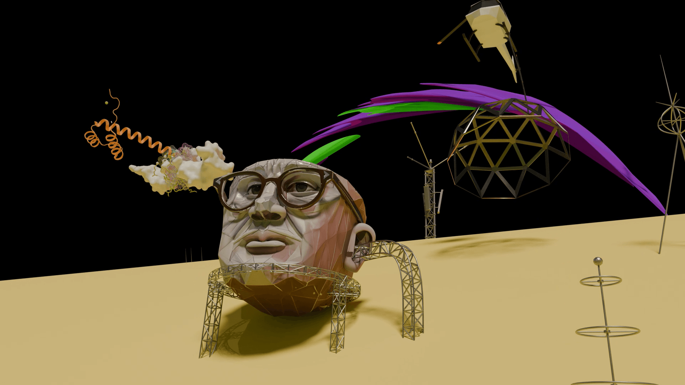
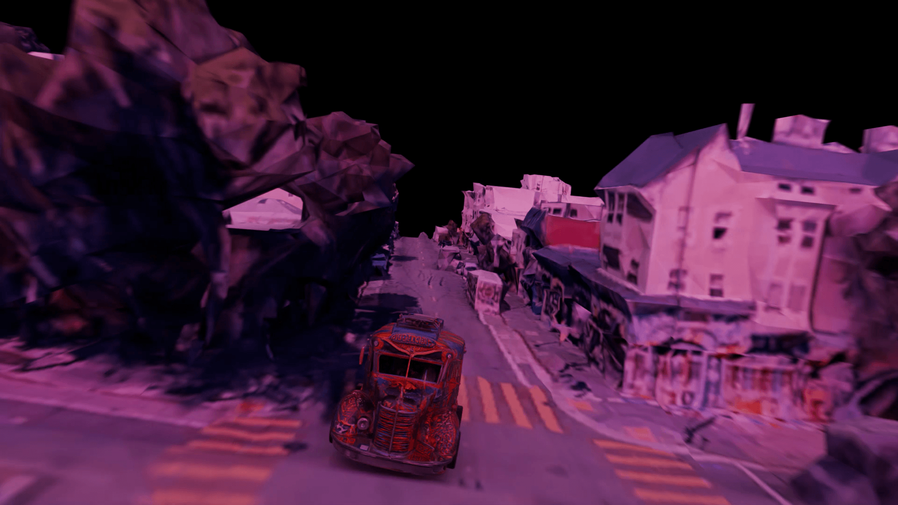

个人计算机与反文化
PROJECT INFO
CLIENT
Institute for Network Society, China Academy of Art
FORMAT
Documentary End-Credits Animation
DURATION
1'46"
YEAR
2025
ROLE
3D Animation Production
TOOLS
Blender
这段三维动画作为文化与技术三部曲第一部《个人计算机与反文化》的片尾。
STILLS



